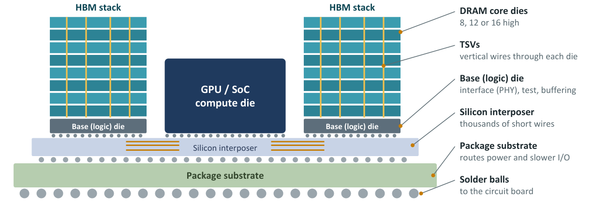

Chapter 7: HBM and Specialty DRAM¶
High Bandwidth Memory stacks DRAM dies vertically and connects them to the processor through a very wide, short interface. It delivers by far the most bandwidth of any memory and is the defining memory of the AI era. This chapter explains how a stack is built, why accelerators need it, what it costs, and how its generations compare. The second half turns to the specialty and historic DRAMs, the designs adapted for special jobs, some of which are still made while others matter mainly as history that shaped modern designs.
7.1 How HBM is built¶
An HBM stack is a tower of DRAM dies, 8, 12 or 16 high in current parts, sitting on a base die, also called the logic die. Each DRAM die is thinned and pierced by thousands of TSVs (through-silicon vias): vertical copper connections that carry signals and power straight through the silicon. The base die contains the interface circuits (the PHY), test logic and buffers.
Instead of a few fast pins, HBM uses a very wide, relatively slow bus: 1024 bits per stack up to HBM3E, and 2048 bits for HBM4. So many wires cannot run through an ordinary circuit board, so the stacks and the processor sit side by side on a silicon interposer, a slab of silicon with very fine wiring. This is called 2.5D packaging, and TSMC's CoWoS (chip-on-wafer-on-substrate) is the best-known example. Because the wires are only millimetres long, each bit costs little energy to move.

Figure 7.1 is a simplified cross-section, not to scale; real accelerators carry up to eight or more stacks.
7.2 Why AI needs HBM¶
Training and running large AI models is often limited not by arithmetic but by how fast model weights and activations can be streamed from memory. When generating text, for example, every new token may require reading most of the model's weights. An accelerator with eight HBM3E stacks has roughly 8 TB/s of bandwidth. Capacity matters too: bigger stacks let larger models fit on fewer chips.
Example 7.1: HBM bandwidth against a desktop
- One HBM3E stack at 9.6 Gbps per pin: \(9.6 \times 1024 / 8 = 1228.8\) GB/s, about 1.2 TB/s.
- Eight such stacks: \(8 \times 1.2288 = 9.8\) TB/s. At the lower end of the HBM3E speed range (9.2 Gbps) eight stacks give \(8 \times 1177.6 = 9.4\) TB/s; the figure "8 to 10 TB/s" covers the range of accelerators.
- A dual-channel DDR5-6400 desktop reaches 102.4 GB/s (Example 1.2). The ratio is \(9830 / 102.4 \approx 96\) for ten TB/s, and \(8000/102.4 \approx 78\) for 8 TB/s.
So an eight-stack accelerator has roughly 80 to 95 times the bandwidth of a dual-channel desktop.
A correction
The tutorial text says "more than a hundred times a dual-channel desktop" for 8 TB/s. The arithmetic gives 78 to 96 times, so "roughly eighty to ninety times" is the accurate statement.
7.3 Cost and supply¶
HBM is expensive: it costs several times more per gigabyte than DDR5, because stacking, TSVs and thinning reduce yield, and each die is larger than a comparable DDR die. It also needs costly interposer packaging with limited factory capacity. Only three companies make it in volume (SK hynix, Samsung and Micron), and AI demand has kept supply tight. HBM4 moves the base die to a logic process, opening the door to custom base dies designed with the customer (Chapter 15).
7.4 HBM generations at a glance¶
| Generation | Year | Bus width | Speed per pin | Bandwidth per stack | Max capacity per stack | Used in |
|---|---|---|---|---|---|---|
| HBM | 2015 | 1024-bit | 1 Gbps | 128 GB/s | 1 GB | AMD Fury |
| HBM2/2E | 2016/2020 | 1024-bit | 2–3.6 Gbps | 256–460 GB/s | 8–16 GB | V100, A100 |
| HBM3 | 2022 | 1024-bit | 6.4 Gbps | 819 GB/s | 24 GB | H100 |
| HBM3E | 2024 | 1024-bit | 9.2–9.8 Gbps | ~1.2 TB/s | 36 GB (12-high) | H200, B200/B300, MI325X/MI350 |
| HBM4 | 2026 | 2048-bit | 8–10+ Gbps | 2+ TB/s | 48–64 GB (16-high) | Nvidia Rubin, AMD MI400 |
Example 7.2: Checking the HBM table
- HBM3: \(6.4 \times 1024 / 8 = 819.2\) GB/s, matching 819 GB/s.
- HBM4 at 8 Gbps: \(8 \times 2048 / 8 = 2048\) GB/s, about 2 TB/s. Doubling the bus width halves the pin speed needed for a given bandwidth, which is an advantage because wires can then run slower.
- Capacity: a 12-high HBM3E stack of 36 GB means \(36 \times 8 / 12 = 24\) Gb per die; a 16-high stack of 48 GB means 24 Gb dies again, and 64 GB means 32 Gb dies.
7.5 Specialty and historic DRAM¶
Beyond the four big families, DRAM has been adapted for special jobs.
RLDRAM (reduced-latency DRAM). RLDRAM uses smaller, more numerous banks and an SRAM-like interface with no need to manage rows, so a random access completes much sooner than in standard DRAM. It sits between QDR SRAM (faster, smaller) and DDR (larger, slower) in cost and performance, and is used mainly for packet buffers and lookup tables in network equipment.
eDRAM (embedded DRAM). eDRAM puts DRAM cells on the same die as logic (or in the same package), usually with a deep-trench or special capacitor. It gives several times the density of SRAM at somewhat higher latency, plus refresh. Examples are the large L3 caches in IBM POWER and IBM Z mainframe processors, the Intel Iris Pro graphics cache ("Crystal Well") and the 10 MB of eDRAM next to the Xbox 360 GPU. It is rare at the newest process nodes, where stacked SRAM has largely taken its place.
FPM and EDO DRAM. Fast Page Mode DRAM let the controller read several columns from an already-open row without repeating the row address. Extended Data Out DRAM kept output data valid while the next column address was supplied, overlapping the two steps. Both were asynchronous (no clock) and powered the PCs of the 1990s on SIMM modules before SDRAM replaced them.
RDRAM (Rambus DRAM). Rambus DRAM used a narrow, very fast packet-based bus with chips daisy-chained along the channel. It offered high bandwidth for its day but had high latency, high cost, heat and licensing disputes. It appeared in the Nintendo 64, the PlayStation 2 and early Pentium 4 PCs (RIMM modules) before DDR won the PC market.
XDR DRAM. XDR was Rambus's successor to RDRAM, using differential signalling and multiple transfers per clock for high per-pin bandwidth. Its best-known use was as the main memory of the Sony PlayStation 3, alongside GDDR3 for graphics.
VRAM, SGRAM and WRAM. The graphics cards of the 1990s used special DRAMs. VRAM was dual-ported: one port for the processor to draw into, and a serial port that streamed pixels to the display at the same time. SGRAM (synchronous graphics RAM) added features such as block writes to fill areas quickly, and evolved into GDDR. WRAM (window RAM) was a cheaper, faster dual-ported variant used in cards such as the Matrox Millennium.
| Type | Key idea | Where used | Status |
|---|---|---|---|
| RLDRAM | Many small banks, SRAM-like interface, low random-access latency | Network packet buffers | Niche, still made |
| eDRAM | DRAM cells on (or next to) a logic die | IBM POWER/Z caches, Intel Iris Pro, Xbox 360 | Rare at new nodes |
| FPM / EDO DRAM | Asynchronous; faster access within an open row | 1990s PCs | Obsolete |
| RDRAM (Rambus) | Narrow, fast, packet-based bus | Pentium 4, N64, PS2 | Obsolete |
| XDR DRAM | Differential, multi-transfer Rambus successor | PS3 | Obsolete |
| VRAM / SGRAM / WRAM | Dual-ported or graphics-optimised DRAM | 1990s graphics cards | Obsolete (SGRAM led to GDDR) |
7.6 Summary¶
- HBM stacks 8, 12 or 16 DRAM dies joined by TSVs on a base die and reaches the processor through a 1024-bit (HBM4: 2048-bit) bus on a silicon interposer.
- A stack gives about 1.2 TB/s (HBM3E) to over 2 TB/s (HBM4); eight stacks give 8 to 10 TB/s, roughly 80 to 95 times a dual-channel desktop.
- HBM costs several times more per gigabyte than DDR5 and is made by three companies.
- The specialty DRAMs adapted the cell and interface for latency (RLDRAM), density next to logic (eDRAM), or graphics (VRAM, SGRAM); the Rambus designs lost to DDR.
7.7 Exercises¶
Exercise 7.1. Compute the bandwidth of one HBM2E stack at 3.2 Gbps per pin on a 1024-bit bus.
Answer
\(3.2 \times 1024 / 8 = 409.6\) GB/s, inside the 256 to 460 GB/s range for HBM2/2E.
Exercise 7.2. An accelerator has six HBM3E stacks at 9.6 Gbps. What is its total bandwidth and how many 12-high 36 GB stacks give its capacity?
Answer
Bandwidth \(= 6 \times 1228.8 = 7372.8\) GB/s, about 7.4 TB/s. Capacity \(= 6 \times 36 = 216\) GB.
Exercise 7.3. Why do HBM stacks sit on a silicon interposer instead of an ordinary circuit board?
Answer
A 1024-bit or 2048-bit interface per stack has thousands of wires, too many and too fine for an ordinary board. A silicon interposer has very fine wiring, so the thousands of wires fit and are only millimetres long, which also keeps the energy per bit low.
Exercise 7.4. Suppose a model needs all of its 140 GB of weights read once for every generated token, and the accelerator has 8 TB/s of memory bandwidth. What is the best-case token rate set by memory bandwidth alone?
Answer
\(8000 \text{ GB/s} / 140 \text{ GB} \approx 57\) tokens per second at most. This is a supposed example to show why bandwidth limits text generation; real rates are lower.
Exercise 7.5. Match each memory to its niche: eDRAM, RLDRAM, SGRAM, RDRAM. (a) network packet buffers; (b) large caches next to a processor core; (c) graphics cards of the 1990s that evolved into GDDR; (d) a narrow packet-based bus used by the Nintendo 64.
Answer
eDRAM: (b). RLDRAM: (a). SGRAM: (c). RDRAM: (d).